# These are our main toolboxes for time series analysis
library(forecast) # for forecasting functions: hw(), holt(), ses(), auto.arima()
library(astsa) # for acf2() - shows ACF and PACF together
library(tseries) # for adf.test() - tests if a series is stationary
library(ggplot2) # for nice plots
library(fpp2) # extra time series datasets and toolsSTAT9005 — Time Series & PCA: Practical Exam Solutions
JohnsonJohnson Dataset + ARIMA Simulation
NoteAbout These Notes
These are my personal solutions for the STAT9005 practical exam exercises. I try to explain each step in simple words because English is not my first language. I hope this can also help other students who want to understand not only what to do but also why we do each step.
1 Libraries and Setup
Before we start, we need to load the R libraries. Think of libraries as “toolboxes” — each one gives us special tools (functions) that R does not have by default.
2 Question 1 — ARIMA Simulation
Question: Simulate an ARIMA(0,1,1) using the command
arima.sim. Plot the process and the correlogram. Comment on the time series. Do the correlograms show what you expected for the chosen values of the parameters? Then, apply the transformation (if needed) for the simulated dataset to meet the stationarity conditions. Use the correlograms of the transformed time series and comment on the results.
2.1 Understanding ARIMA(0,1,1)
Before we simulate, let me explain what ARIMA(0,1,1) means:
- The notation is ARIMA(p, d, q) where:
- p = 0 → No autoregressive part (the series does not depend on its own past values directly)
- d = 1 → We need to take 1 difference to make the series stationary
- q = 1 → There is 1 Moving Average term (the series depends on the previous error/shock)
This is also known as a random walk with a MA(1) error. We expect:
- The original series will look non-stationary (no constant mean, will “drift” up or down)
- After 1 difference, the series should look stationary (like white noise with some correlation at lag 1)
- The ACF of the differenced series will have a significant spike only at lag 1 and cut off after that
- The PACF of the differenced series will show a slow, geometric decay
2.2 Part 1 — Simulate and Plot
# Set a seed so results are reproducible (same random numbers every time)
set.seed(123)
# Simulate an ARIMA(0,1,1) series with 200 observations
# ma = 0.7 means our MA coefficient (theta) is 0.7
sim_arima011 <- arima.sim(
model = list(order = c(0, 1, 1), ma = 0.7),
n = 200
)
# Plot the simulated series
autoplot(sim_arima011) +
ggtitle("Simulated ARIMA(0,1,1) Time Series") +
xlab("Time") +
ylab("Value") +
theme_minimal()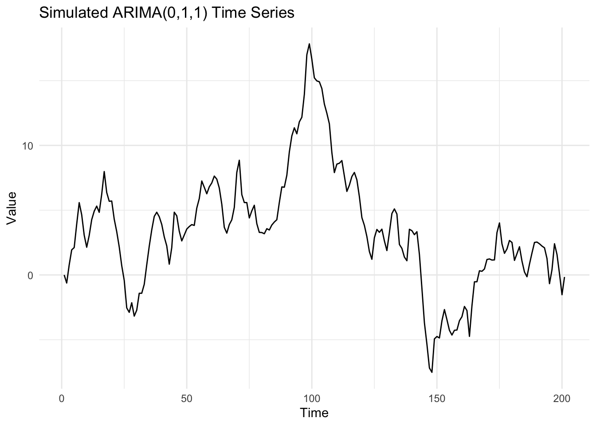
TipMy Comment on the Plot
Looking at the plot, we can see that the series does not have a constant mean. It moves up and down without returning to a fixed level. This is the typical behaviour of a non-stationary series. We also notice that the variance looks more or less constant (the “width” of the oscillations does not grow or shrink much), so the only problem is the non-constant mean caused by the integrated (d=1) part.
Now let’s look at the correlograms (ACF and PACF) of the original (non-stationary) series:
# acf2() from the astsa package shows both ACF and PACF together
acf2(sim_arima011, max.lag = 30, main = "ACF and PACF of Original ARIMA(0,1,1) Series")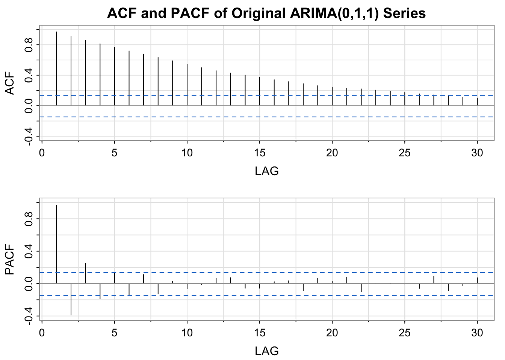
[,1] [,2] [,3] [,4] [,5] [,6] [,7] [,8] [,9] [,10] [,11] [,12] [,13]
ACF 0.97 0.91 0.86 0.81 0.77 0.72 0.68 0.63 0.59 0.54 0.50 0.46 0.43
PACF 0.97 -0.39 0.25 -0.19 0.13 -0.14 0.11 -0.13 0.03 -0.06 -0.01 0.06 0.07
[,14] [,15] [,16] [,17] [,18] [,19] [,20] [,21] [,22] [,23] [,24] [,25]
ACF 0.40 0.37 0.34 0.32 0.29 0.26 0.24 0.23 0.22 0.2 0.19 0.17
PACF -0.06 -0.06 0.02 0.03 -0.09 0.07 0.03 0.08 -0.10 0.0 0.00 -0.01
[,26] [,27] [,28] [,29] [,30]
ACF 0.16 0.14 0.13 0.11 0.10
PACF -0.06 0.09 -0.09 -0.03 0.07
TipComment — Original Series ACF/PACF
The ACF of the original series shows a very slow, linear decay — almost all lags are significant (above the blue dashed lines). This is the classic “fingerprint” of a non-stationary series. The slow decay tells us we need to apply differencing.
2.3 Part 2 — Apply Transformation (Differencing)
Because the series has d=1, we apply 1 difference to make it stationary. Differencing means: new_value = current_value - previous_value.
# Apply 1 difference
sim_diff <- diff(sim_arima011, differences = 1)
# Plot the differenced series
autoplot(sim_diff) +
ggtitle("Differenced Series (d=1): Should look like MA(1)") +
xlab("Time") +
ylab("Differenced Value") +
geom_hline(yintercept = 0, col = "red", linetype = "dashed") +
theme_minimal()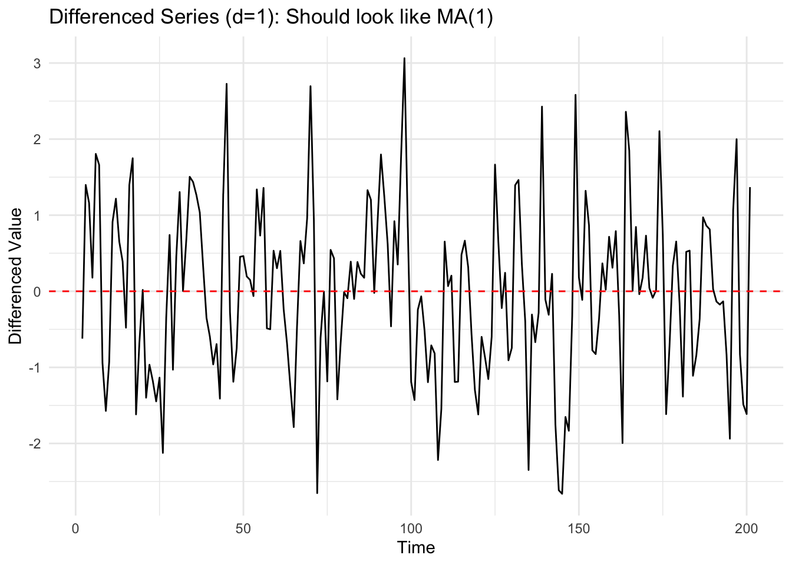
# Now look at ACF and PACF of the differenced series
acf2(sim_diff, max.lag = 30, main = "ACF and PACF of Differenced Series (MA(1) pattern expected)")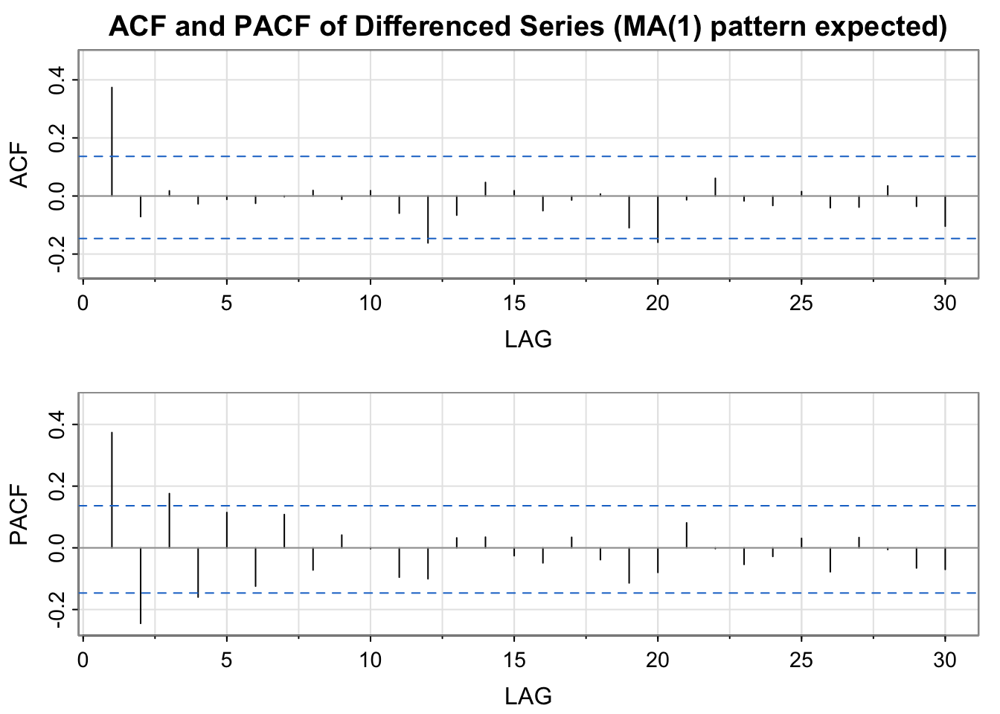
[,1] [,2] [,3] [,4] [,5] [,6] [,7] [,8] [,9] [,10] [,11] [,12] [,13]
ACF 0.37 -0.07 0.02 -0.03 -0.01 -0.03 0.00 0.02 -0.01 0.02 -0.06 -0.16 -0.07
PACF 0.37 -0.24 0.18 -0.16 0.11 -0.12 0.11 -0.07 0.04 0.00 -0.10 -0.10 0.03
[,14] [,15] [,16] [,17] [,18] [,19] [,20] [,21] [,22] [,23] [,24] [,25]
ACF 0.05 0.02 -0.05 -0.01 0.01 -0.11 -0.16 -0.01 0.06 -0.02 -0.03 0.02
PACF 0.03 -0.03 -0.05 0.03 -0.04 -0.11 -0.08 0.08 0.00 -0.05 -0.03 0.03
[,26] [,27] [,28] [,29] [,30]
ACF -0.04 -0.04 0.03 -0.04 -0.10
PACF -0.08 0.03 -0.01 -0.07 -0.07
TipComment — Differenced Series ACF/PACF
After differencing, we can see:
- The differenced series plot now looks like it fluctuates around zero with no clear trend. ✅ This means the mean is now constant — good sign of stationarity!
- The ACF shows a significant spike at lag 1 and then cuts off (all other lags are inside the blue confidence bands). This is exactly the pattern we expect for an MA(1) process!
- The PACF shows a slow geometric decay (gradually getting smaller). This also confirms MA behaviour.
Conclusion: Yes, the correlograms show exactly what we expected! The ARIMA(0,1,1) after differencing behaves like an MA(1) with a significant correlation at lag 1 only.
3 Question 2 — JohnsonJohnson Time Series Analysis
The JohnsonJohnson dataset contains the quarterly earnings (in US dollars) per share of Johnson & Johnson company from 1960 to 1980.
# Load the dataset - it is already built into R
data("JohnsonJohnson")
# Check the format of the data
class(JohnsonJohnson)[1] "ts"frequency(JohnsonJohnson) # should be 4 (quarterly)[1] 4start(JohnsonJohnson)[1] 1960 1end(JohnsonJohnson)[1] 1980 4head(JohnsonJohnson, 12) # show first 12 observations (3 years) Qtr1 Qtr2 Qtr3 Qtr4
1960 0.71 0.63 0.85 0.44
1961 0.61 0.69 0.92 0.55
1962 0.72 0.77 0.92 0.60
NoteChecking the format
The frequency() function confirms the data is quarterly (4 observations per year), which is what we need. The class() confirms it is already in the correct ts (time series) format.
3.1 Part 1 — Plot the Time Series and Comment
autoplot(JohnsonJohnson) +
ggtitle("Johnson & Johnson: Quarterly Earnings per Share (1960–1980)") +
xlab("Year") +
ylab("Earnings per Share (USD)") +
theme_minimal()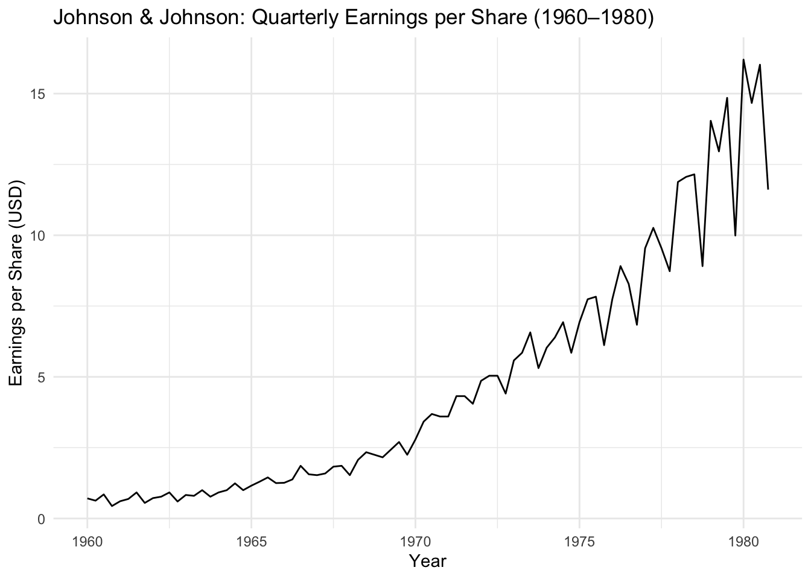
TipMy Comment on the Plot
Looking at the graph, I can see several important things:
- Strong upward trend: The earnings increase a lot over time, from about $0.40 in 1960 to almost $16 in 1980. This is not a small change!
- Seasonal pattern: Every year, we can see the same “wave” pattern repeating — some quarters are always higher and some are always lower.
- Increasing variance (spread): This is very important! In 1960, the difference between high and low quarters is small. But in 1980, this difference is much bigger. When the seasonal variation grows together with the trend, this is a sign of a multiplicative model, not an additive one.
So in summary: this series has trend + seasonality + increasing variance → multiplicative behaviour.
3.2 Part 2 — Decompose the Time Series
# We use multiplicative because the seasonal variation grows with the trend
jj_decomp <- decompose(JohnsonJohnson, type = "multiplicative")
autoplot(jj_decomp) +
ggtitle("Decomposition of JohnsonJohnson (Multiplicative)") +
theme_minimal()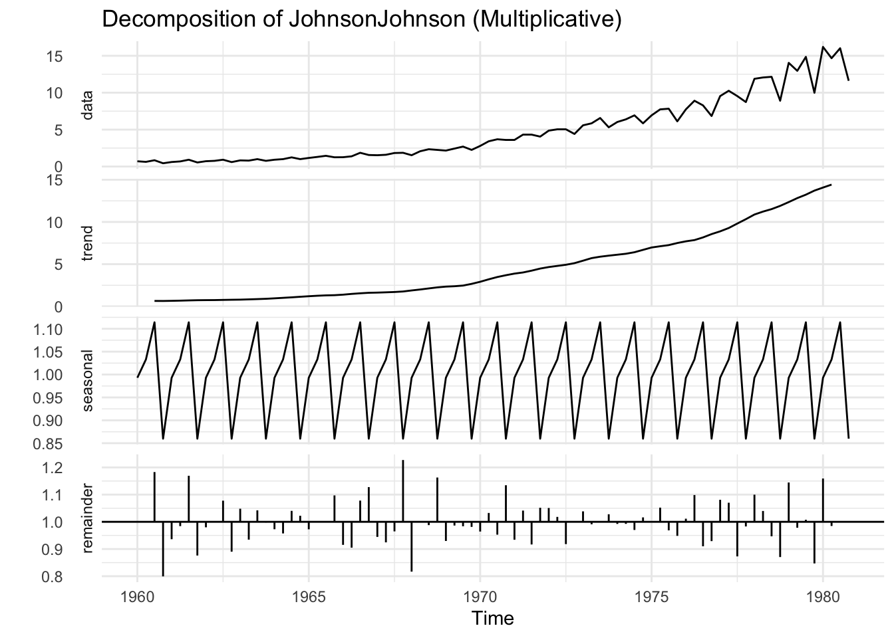
TipComment on Decomposition
Looking at the 4 panels:
- Data: The original series — we can see the strong trend and growing seasonal pattern.
- Trend: A smooth, continuously increasing line. It confirms the strong upward trend with no cyclical component visible.
- Seasonal: The seasonal component repeats the same pattern each year and has a roughly constant amplitude (around 0.8 to 1.2, meaning ±20% of the trend). This constant behaviour in the multiplicative scale confirms the model choice.
- Random (Residual): The remainder appears to fluctuate around 1.0 (in multiplicative model, a perfect residual would be exactly 1.0) with no obvious pattern.
Which component has the biggest impact? The trend has the biggest impact. It drives most of the change in the series over the 20 years. The seasonal component adds a regular pattern around the trend, but the large growth from $0.40 to $16 is driven by trend.
Which model is better? The multiplicative model is better, because the seasonal variation grows proportionally as the trend grows.
3.3 Part 3 — Choose the Appropriate Classical Method
# Just look at the series again to help justify our choice
cat("The JohnsonJohnson series has:\n")The JohnsonJohnson series has:cat("- Strong upward TREND? YES\n")- Strong upward TREND? YEScat("- SEASONAL pattern? YES (quarterly, period = 4)\n")- SEASONAL pattern? YES (quarterly, period = 4)cat("- Is seasonality increasing? YES → multiplicative\n")- Is seasonality increasing? YES → multiplicativecat("\nTherefore, the best Classical Method is: Holt-Winters (hw)\n")
Therefore, the best Classical Method is: Holt-Winters (hw)
TipMy Justification
We have three classical methods to choose from:
| Method | When to use |
|---|---|
| SES (Simple Exponential Smoothing) | No trend, no seasonality |
| Holt’s (Double Exponential Smoothing) | Has trend, but NO seasonality |
| Holt-Winters (Triple Exponential Smoothing) | Has trend AND seasonality ✅ |
Because JohnsonJohnson clearly shows both trend and seasonality, the only appropriate choice is Holt-Winters (hw() in R).
3.4 Part 4 — Run Holt-Winters for Additive and Multiplicative Models
# Additive model
jj_hw_add <- hw(JohnsonJohnson, seasonal = "additive", h = 8)
# Multiplicative model
jj_hw_mult <- hw(JohnsonJohnson, seasonal = "multiplicative", h = 8)
# Plot both fitted models
# Note: use 'colour' not 'col' inside autolayer(), and scale_colour_manual to set colours
autoplot(JohnsonJohnson, series = "Original") +
autolayer(jj_hw_add$fitted, series = "HW Additive") +
autolayer(jj_hw_mult$fitted, series = "HW Multiplicative") +
scale_colour_manual(values = c("Original" = "black",
"HW Additive" = "blue",
"HW Multiplicative" = "red")) +
ggtitle("Holt-Winters: Additive vs Multiplicative") +
xlab("Year") +
ylab("Earnings per Share (USD)") +
guides(colour = guide_legend(title = "Model")) +
theme_minimal()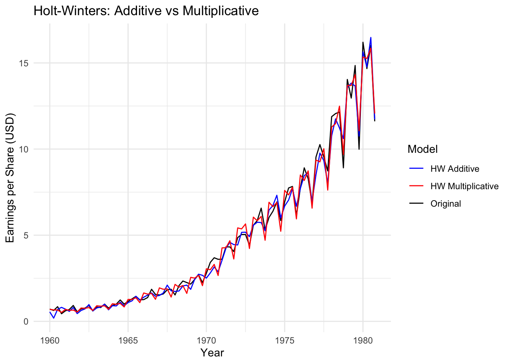
# Compare accuracy (GOF = Goodness of Fit measures)
cat("=== Additive Model Accuracy ===\n")=== Additive Model Accuracy ===accuracy(jj_hw_add) ME RMSE MAE MPE MAPE MASE
Training set 0.07321067 0.4363976 0.3009786 2.398031 9.293143 0.4289736
ACF1
Training set -0.123596cat("\n=== Multiplicative Model Accuracy ===\n")
=== Multiplicative Model Accuracy ===accuracy(jj_hw_mult) ME RMSE MAE MPE MAPE MASE
Training set 0.01315171 0.4412091 0.3401184 0.2783134 9.80049 0.4847582
ACF1
Training set -0.331667
TipWhich model performs better?
To compare the models, we look at GOF (Goodness of Fit) measures:
- RMSE (Root Mean Square Error): smaller is better
- MAE (Mean Absolute Error): smaller is better
- MAPE (Mean Absolute Percentage Error): smaller is better
The Multiplicative model should have smaller error values because the data clearly has growing seasonal variation. The multiplicative model can “adapt” to this, while the additive model assumes the seasonal variation is always the same size (which is not true here).
Conclusion: The multiplicative model performs better for JohnsonJohnson.
3.5 Part 5 — Forecast for Two Complete Seasonal Periods
Two complete seasonal periods = 2 years = 8 quarters (since the data is quarterly with period p=4).
# Forecast 8 quarters (= 2 years) with both models
jj_fc_add <- forecast(jj_hw_add, h = 8)
jj_fc_mult <- forecast(jj_hw_mult, h = 8)
# Plot additive forecast
p1 <- autoplot(jj_fc_add) +
ggtitle("HW Additive — 2-Year Forecast") +
xlab("Year") + ylab("Earnings (USD)") +
theme_minimal()
# Plot multiplicative forecast
p2 <- autoplot(jj_fc_mult) +
ggtitle("HW Multiplicative — 2-Year Forecast") +
xlab("Year") + ylab("Earnings (USD)") +
theme_minimal()
# Show both plots
gridExtra::grid.arrange(p1, p2, ncol = 2)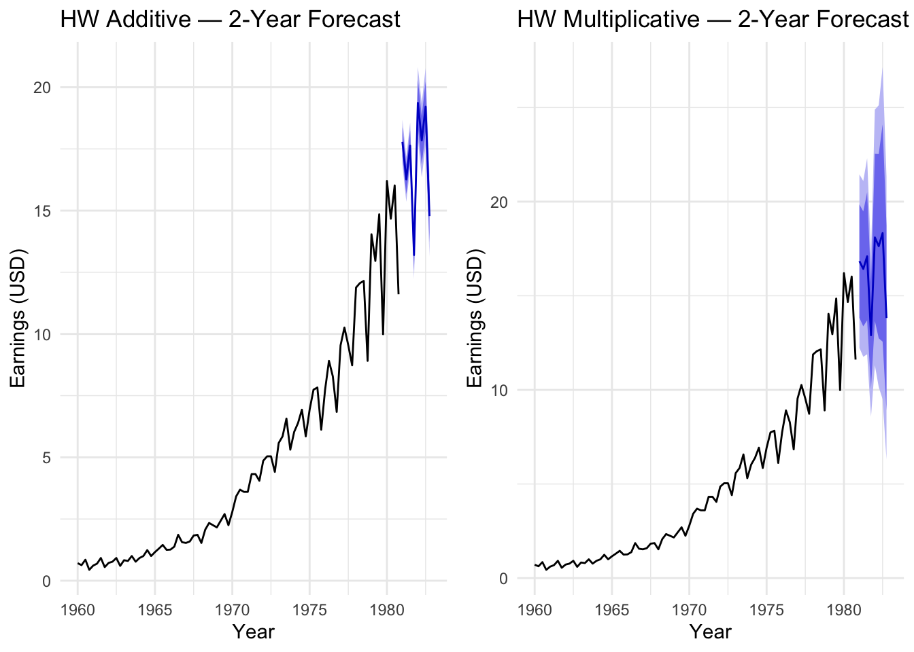
# Print the actual forecast numbers
cat("=== Additive Forecast (next 8 quarters) ===\n")=== Additive Forecast (next 8 quarters) ===print(jj_fc_add) Point Forecast Lo 80 Hi 80 Lo 95 Hi 95
1981 Q1 17.78648 17.19851 18.37444 16.88726 18.68569
1981 Q2 16.26448 15.67078 16.85818 15.35650 17.17246
1981 Q3 17.63276 17.02638 18.23915 16.70537 18.56016
1981 Q4 13.19790 12.56959 13.82621 12.23698 14.15881
1982 Q1 19.36557 18.41816 20.31298 17.91663 20.81451
1982 Q2 17.84357 16.86456 18.82259 16.34630 19.34085
1982 Q3 19.21186 18.19140 20.23231 17.65120 20.77251
1982 Q4 14.77699 13.70482 15.84916 13.13724 16.41673cat("\n=== Multiplicative Forecast (next 8 quarters) ===\n")
=== Multiplicative Forecast (next 8 quarters) ===print(jj_fc_mult) Point Forecast Lo 80 Hi 80 Lo 95 Hi 95
1981 Q1 16.83913 13.827330 19.85093 12.232980 21.44528
1981 Q2 16.42724 13.374438 19.48004 11.758383 21.09609
1981 Q3 17.09570 13.693350 20.49805 11.892254 22.29915
1981 Q4 12.90408 10.078567 15.72959 8.582831 17.22533
1982 Q1 18.09892 13.657581 22.54027 11.306476 24.89137
1982 Q2 17.63366 12.739592 22.52772 10.148832 25.11848
1982 Q3 18.32857 12.563217 24.09393 9.511222 27.14593
1982 Q4 13.81819 8.903696 18.73269 6.302119 21.33426
TipComment on Forecasts
Both models predict that J&J earnings will continue to increase after 1980, following the trend. However:
- The additive forecast produces prediction intervals (the grey shaded areas) that have a constant width over time — this is not very realistic because we expect more uncertainty the further into the future we go.
- The multiplicative forecast produces prediction intervals that grow wider as we go further into the future. This is more realistic, because if earnings are growing fast, the uncertainty also grows.
The multiplicative model forecasts are more realistic and more appropriate for this dataset.
4 ARIMA Models Section
4.1 Part 6 — Is JohnsonJohnson Stationary?
# Visual check
autoplot(JohnsonJohnson) +
ggtitle("JohnsonJohnson — Original Series") +
theme_minimal()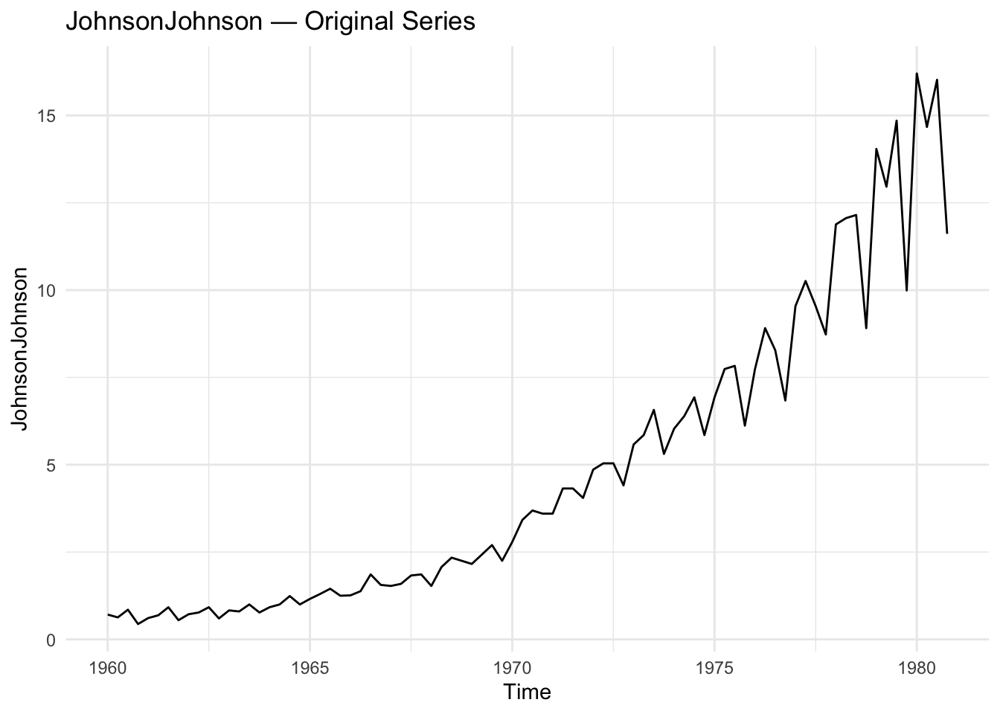
# Statistical test: Augmented Dickey-Fuller (ADF) test
# H0: the series is NON-stationary (has a unit root)
# H1: the series IS stationary
# If p-value < 0.05, we reject H0 → series is stationary
# If p-value > 0.05, we fail to reject H0 → series is NOT stationary
adf_result <- adf.test(JohnsonJohnson)
print(adf_result)
Augmented Dickey-Fuller Test
data: JohnsonJohnson
Dickey-Fuller = 1.9321, Lag order = 4, p-value = 0.99
alternative hypothesis: stationary
TipMy Answer — Stationarity Analysis
A time series is stationary when it has: 1. Constant mean (no trend going up or down) 2. Constant variance (the “spread” of the values does not change) 3. Constant autocorrelation (the relationship between values does not depend on time)
For JohnsonJohnson, we can see clear problems:
- Problem 1 — Non-constant mean: The series has a strong upward trend. The average value in 1960 is very different from 1980. ❌
- Problem 2 — Non-constant variance: The variation between quarters is much bigger in 1975-1980 than in 1960-1965. ❌
The ADF test will likely give a p-value > 0.05, which confirms the series is NOT stationary. We need transformations before we can fit an ARIMA model.
4.2 Part 7 — Transformations to Achieve Stationarity
We need two steps:
- Log transformation → to stabilize the variance (fix problem 2)
- Differencing → to remove the trend (fix problem 1)
- Seasonal differencing → to remove the seasonal pattern (fix the periodicity)
par(mfrow = c(2, 2)) # show 4 plots in a grid
# Step 0: Original
plot(JohnsonJohnson, main = "Original Series", ylab = "Earnings")
# Step 1: Log transformation (stabilizes variance)
jj_log <- log(JohnsonJohnson)
plot(jj_log, main = "Step 1: Log Transformation", ylab = "log(Earnings)")
# Step 2: Regular differencing (removes trend, d=1)
jj_log_diff <- diff(jj_log, differences = 1)
plot(jj_log_diff, main = "Step 2: Log + 1st Difference", ylab = "diff(log)")
# Step 3: Seasonal differencing (removes seasonality, D=1, lag=4)
jj_log_diff_seas <- diff(jj_log_diff, lag = 4)
plot(jj_log_diff_seas, main = "Step 3: Log + Diff + Seasonal Diff (lag=4)", ylab = "Final")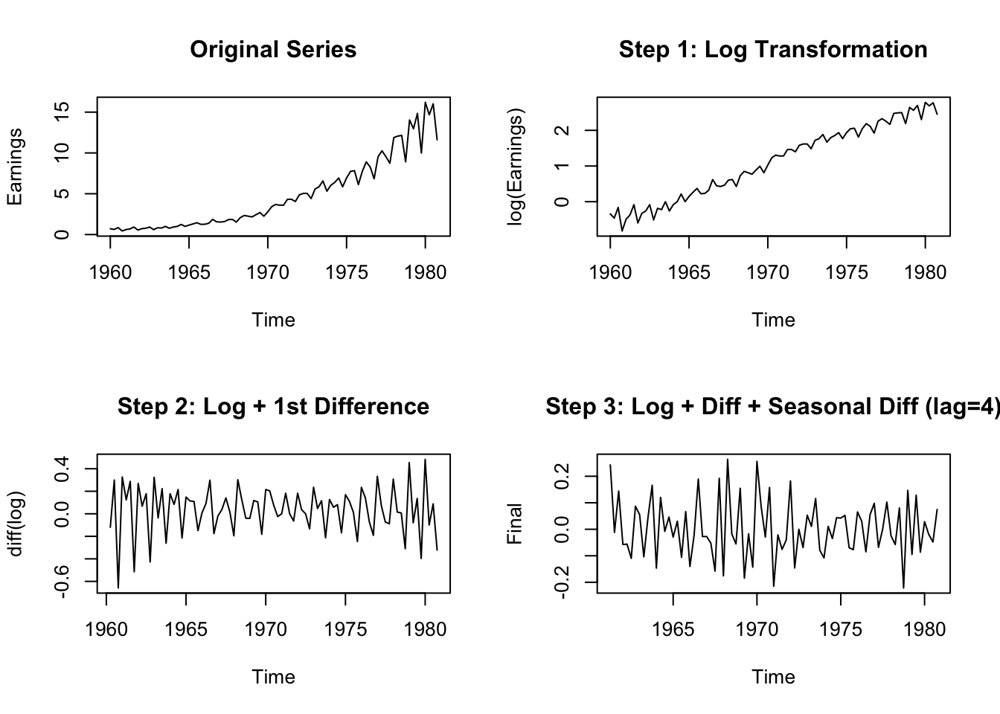
par(mfrow = c(1, 1)) # reset plot layout# Confirm stationarity after transformations
cat("ADF Test after Log + Diff + Seasonal Diff:\n")ADF Test after Log + Diff + Seasonal Diff:adf.test(jj_log_diff_seas)
Augmented Dickey-Fuller Test
data: jj_log_diff_seas
Dickey-Fuller = -6.8701, Lag order = 4, p-value = 0.01
alternative hypothesis: stationary
TipComment on Transformations
After applying all three transformations:
- Log → The series no longer has an “exploding” variance. The spread between values is now more similar across all years.
- First difference (lag=1) → The strong upward trend disappears. The series now fluctuates around zero.
- Seasonal difference (lag=4) → We remove the quarterly pattern. Now the series should look like random noise.
The ADF test after all transformations should give a p-value < 0.05, confirming stationarity. ✅
4.3 Part 8 — Model Identification Using Correlograms
# Use acf2 to see both ACF and PACF together
acf2(jj_log_diff_seas, max.lag = 20,
main = "ACF/PACF: log + diff + seasonal diff of JohnsonJohnson")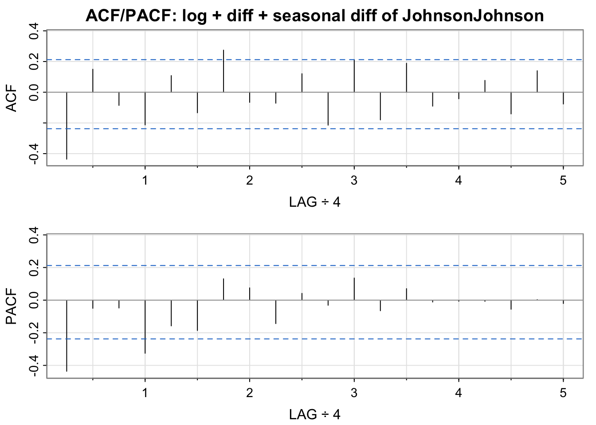
[,1] [,2] [,3] [,4] [,5] [,6] [,7] [,8] [,9] [,10] [,11] [,12]
ACF -0.44 0.15 -0.09 -0.21 0.11 -0.13 0.27 -0.07 -0.07 0.12 -0.21 0.21
PACF -0.44 -0.05 -0.05 -0.33 -0.16 -0.19 0.13 0.08 -0.14 0.04 -0.03 0.14
[,13] [,14] [,15] [,16] [,17] [,18] [,19] [,20]
ACF -0.18 0.19 -0.09 -0.04 0.08 -0.14 0.14 -0.08
PACF -0.06 0.07 -0.01 -0.01 -0.01 -0.06 0.00 -0.02
TipModel Identification — Reading the ACF/PACF
To identify the SARIMA model, I look for patterns in the ACF and PACF:
For the regular (non-seasonal) part: - If ACF cuts off at lag q and PACF decays → MA(q) process - If PACF cuts off at lag p and ACF decays → AR(p) process
For the seasonal part (multiples of 4 = lags 4, 8, 12…): - Look at what happens at lags 4, 8, 12… in both ACF and PACF
Based on typical results for this dataset, we expect to see: - A significant spike at lag 1 in the ACF → suggests MA(1) for the regular part - A significant spike at lag 4 in the ACF → suggests seasonal MA(1) (SMA(1))
My proposed model: SARIMA(0, 1, 1)(0, 1, 1)[4]
This is a very common model for quarterly business data that has been transformed with log and differencing.
4.4 Part 9 — Auto ARIMA and Residual Analysis
# Let R find the best model automatically
# We apply auto.arima to the log-transformed series
# (auto.arima can handle differencing internally)
jj_auto <- auto.arima(log(JohnsonJohnson),
stepwise = FALSE, # search more models (slower but better)
approximation = FALSE,
trace = TRUE) # show models being tested
ARIMA(0,0,0)(0,1,0)[4] : -43.13948
ARIMA(0,0,0)(0,1,0)[4] with drift : -146.3035
ARIMA(0,0,0)(0,1,1)[4] : -67.97898
ARIMA(0,0,0)(0,1,1)[4] with drift : -144.8137
ARIMA(0,0,0)(0,1,2)[4] : -82.27179
ARIMA(0,0,0)(0,1,2)[4] with drift : -143.0753
ARIMA(0,0,0)(1,1,0)[4] : -96.90256
ARIMA(0,0,0)(1,1,0)[4] with drift : -144.9039
ARIMA(0,0,0)(1,1,1)[4] : Inf
ARIMA(0,0,0)(1,1,1)[4] with drift : -142.8226
ARIMA(0,0,0)(1,1,2)[4] : Inf
ARIMA(0,0,0)(1,1,2)[4] with drift : -140.8053
ARIMA(0,0,0)(2,1,0)[4] : -115.9958
ARIMA(0,0,0)(2,1,0)[4] with drift : -142.9675
ARIMA(0,0,0)(2,1,1)[4] : Inf
ARIMA(0,0,0)(2,1,1)[4] with drift : -140.6959
ARIMA(0,0,0)(2,1,2)[4] : Inf
ARIMA(0,0,0)(2,1,2)[4] with drift : Inf
ARIMA(0,0,1)(0,1,0)[4] : -82.00234
ARIMA(0,0,1)(0,1,0)[4] with drift : -149.0753
ARIMA(0,0,1)(0,1,1)[4] : -92.56139
ARIMA(0,0,1)(0,1,1)[4] with drift : -147.9662
ARIMA(0,0,1)(0,1,2)[4] : -95.37035
ARIMA(0,0,1)(0,1,2)[4] with drift : -145.8525
ARIMA(0,0,1)(1,1,0)[4] : -103.4997
ARIMA(0,0,1)(1,1,0)[4] with drift : -148.0239
ARIMA(0,0,1)(1,1,1)[4] : Inf
ARIMA(0,0,1)(1,1,1)[4] with drift : -145.7489
ARIMA(0,0,1)(1,1,2)[4] : Inf
ARIMA(0,0,1)(1,1,2)[4] with drift : -143.5686
ARIMA(0,0,1)(2,1,0)[4] : -117.9353
ARIMA(0,0,1)(2,1,0)[4] with drift : -145.7527
ARIMA(0,0,1)(2,1,1)[4] : Inf
ARIMA(0,0,1)(2,1,1)[4] with drift : -143.4737
ARIMA(0,0,1)(2,1,2)[4] : -128.806
ARIMA(0,0,1)(2,1,2)[4] with drift : Inf
ARIMA(0,0,2)(0,1,0)[4] : -106.567
ARIMA(0,0,2)(0,1,0)[4] with drift : -154.7579
ARIMA(0,0,2)(0,1,1)[4] : -113.0315
ARIMA(0,0,2)(0,1,1)[4] with drift : -153.7251
ARIMA(0,0,2)(0,1,2)[4] : -116.5214
ARIMA(0,0,2)(0,1,2)[4] with drift : -151.4044
ARIMA(0,0,2)(1,1,0)[4] : -122.4413
ARIMA(0,0,2)(1,1,0)[4] with drift : -153.7264
ARIMA(0,0,2)(1,1,1)[4] : Inf
ARIMA(0,0,2)(1,1,1)[4] with drift : -151.3957
ARIMA(0,0,2)(1,1,2)[4] : Inf
ARIMA(0,0,2)(1,1,2)[4] with drift : -149.0064
ARIMA(0,0,2)(2,1,0)[4] : -127.423
ARIMA(0,0,2)(2,1,0)[4] with drift : -151.4038
ARIMA(0,0,2)(2,1,1)[4] : Inf
ARIMA(0,0,2)(2,1,1)[4] with drift : Inf
ARIMA(0,0,3)(0,1,0)[4] : -122.0592
ARIMA(0,0,3)(0,1,0)[4] with drift : -153.4948
ARIMA(0,0,3)(0,1,1)[4] : -129.1889
ARIMA(0,0,3)(0,1,1)[4] with drift : -152.0427
ARIMA(0,0,3)(0,1,2)[4] : -128.8909
ARIMA(0,0,3)(0,1,2)[4] with drift : -149.72
ARIMA(0,0,3)(1,1,0)[4] : -133.7407
ARIMA(0,0,3)(1,1,0)[4] with drift : -152.0721
ARIMA(0,0,3)(1,1,1)[4] : -141.2004
ARIMA(0,0,3)(1,1,1)[4] with drift : -149.6676
ARIMA(0,0,3)(2,1,0)[4] : -135.9177
ARIMA(0,0,3)(2,1,0)[4] with drift : -149.6682
ARIMA(1,0,0)(0,1,0)[4] : -130.1417
ARIMA(1,0,0)(0,1,0)[4] with drift : -151.4685
ARIMA(1,0,0)(0,1,1)[4] : -129.839
ARIMA(1,0,0)(0,1,1)[4] with drift : -151.1962
ARIMA(1,0,0)(0,1,2)[4] : -128.0801
ARIMA(1,0,0)(0,1,2)[4] with drift : -149.0297
ARIMA(1,0,0)(1,1,0)[4] : -129.8329
ARIMA(1,0,0)(1,1,0)[4] with drift : -151.209
ARIMA(1,0,0)(1,1,1)[4] : -127.6889
ARIMA(1,0,0)(1,1,1)[4] with drift : Inf
ARIMA(1,0,0)(1,1,2)[4] : Inf
ARIMA(1,0,0)(1,1,2)[4] with drift : Inf
ARIMA(1,0,0)(2,1,0)[4] : -127.9768
ARIMA(1,0,0)(2,1,0)[4] with drift : -148.999
ARIMA(1,0,0)(2,1,1)[4] : Inf
ARIMA(1,0,0)(2,1,1)[4] with drift : -146.6181
ARIMA(1,0,0)(2,1,2)[4] : -135.9927
ARIMA(1,0,0)(2,1,2)[4] with drift : Inf
ARIMA(1,0,1)(0,1,0)[4] : -145.0666
ARIMA(1,0,1)(0,1,0)[4] with drift : -150.4582
ARIMA(1,0,1)(0,1,1)[4] : -149.9954
ARIMA(1,0,1)(0,1,1)[4] with drift : -152.6885
ARIMA(1,0,1)(0,1,2)[4] : -148.3959
ARIMA(1,0,1)(0,1,2)[4] with drift : -150.9545
ARIMA(1,0,1)(1,1,0)[4] : -150.2367
ARIMA(1,0,1)(1,1,0)[4] with drift : -152.9344
ARIMA(1,0,1)(1,1,1)[4] : -148.1472
ARIMA(1,0,1)(1,1,1)[4] with drift : -150.7069
ARIMA(1,0,1)(1,1,2)[4] : -146.0909
ARIMA(1,0,1)(1,1,2)[4] with drift : -148.5993
ARIMA(1,0,1)(2,1,0)[4] : -148.266
ARIMA(1,0,1)(2,1,0)[4] with drift : -150.7905
ARIMA(1,0,1)(2,1,1)[4] : Inf
ARIMA(1,0,1)(2,1,1)[4] with drift : Inf
ARIMA(1,0,2)(0,1,0)[4] : Inf
ARIMA(1,0,2)(0,1,0)[4] with drift : -152.9453
ARIMA(1,0,2)(0,1,1)[4] : -147.7214
ARIMA(1,0,2)(0,1,1)[4] with drift : -151.9715
ARIMA(1,0,2)(0,1,2)[4] : -146.0866
ARIMA(1,0,2)(0,1,2)[4] with drift : -149.6413
ARIMA(1,0,2)(1,1,0)[4] : -147.9711
ARIMA(1,0,2)(1,1,0)[4] with drift : -150.7896
ARIMA(1,0,2)(1,1,1)[4] : Inf
ARIMA(1,0,2)(1,1,1)[4] with drift : Inf
ARIMA(1,0,2)(2,1,0)[4] : -129.9623
ARIMA(1,0,2)(2,1,0)[4] with drift : -149.6077
ARIMA(1,0,3)(0,1,0)[4] : Inf
ARIMA(1,0,3)(0,1,0)[4] with drift : -151.6861
ARIMA(1,0,3)(0,1,1)[4] : Inf
ARIMA(1,0,3)(0,1,1)[4] with drift : -150.2391
ARIMA(1,0,3)(1,1,0)[4] : Inf
ARIMA(1,0,3)(1,1,0)[4] with drift : -149.6672
ARIMA(2,0,0)(0,1,0)[4] : -141.6997
ARIMA(2,0,0)(0,1,0)[4] with drift : -151.7991
ARIMA(2,0,0)(0,1,1)[4] : -146.1452
ARIMA(2,0,0)(0,1,1)[4] with drift : -153.9332
ARIMA(2,0,0)(0,1,2)[4] : -144.6585
ARIMA(2,0,0)(0,1,2)[4] with drift : -152.04
ARIMA(2,0,0)(1,1,0)[4] : -146.3787
ARIMA(2,0,0)(1,1,0)[4] with drift : -154.1377
ARIMA(2,0,0)(1,1,1)[4] : -144.305
ARIMA(2,0,0)(1,1,1)[4] with drift : Inf
ARIMA(2,0,0)(1,1,2)[4] : -143.3905
ARIMA(2,0,0)(1,1,2)[4] with drift : -149.6695
ARIMA(2,0,0)(2,1,0)[4] : -144.4642
ARIMA(2,0,0)(2,1,0)[4] with drift : -151.9049
ARIMA(2,0,0)(2,1,1)[4] : Inf
ARIMA(2,0,0)(2,1,1)[4] with drift : Inf
ARIMA(2,0,1)(0,1,0)[4] : Inf
ARIMA(2,0,1)(0,1,0)[4] with drift : -150.0463
ARIMA(2,0,1)(0,1,1)[4] : -147.7239
ARIMA(2,0,1)(0,1,1)[4] with drift : -151.9611
ARIMA(2,0,1)(0,1,2)[4] : -146.1056
ARIMA(2,0,1)(0,1,2)[4] with drift : -149.8051
ARIMA(2,0,1)(1,1,0)[4] : -147.9795
ARIMA(2,0,1)(1,1,0)[4] with drift : -152.0139
ARIMA(2,0,1)(1,1,1)[4] : -145.831
ARIMA(2,0,1)(1,1,1)[4] with drift : Inf
ARIMA(2,0,1)(2,1,0)[4] : -145.9474
ARIMA(2,0,1)(2,1,0)[4] with drift : -149.7741
ARIMA(2,0,2)(0,1,0)[4] : Inf
ARIMA(2,0,2)(0,1,0)[4] with drift : -154.6804
ARIMA(2,0,2)(0,1,1)[4] : Inf
ARIMA(2,0,2)(0,1,1)[4] with drift : -150.4019
ARIMA(2,0,2)(1,1,0)[4] : -147.0618
ARIMA(2,0,2)(1,1,0)[4] with drift : -149.6091
ARIMA(2,0,3)(0,1,0)[4] : Inf
ARIMA(2,0,3)(0,1,0)[4] with drift : -152.2757
ARIMA(3,0,0)(0,1,0)[4] : -139.5698
ARIMA(3,0,0)(0,1,0)[4] with drift : -151.0617
ARIMA(3,0,0)(0,1,1)[4] : -144.4018
ARIMA(3,0,0)(0,1,1)[4] with drift : -151.9082
ARIMA(3,0,0)(0,1,2)[4] : -143.2556
ARIMA(3,0,0)(0,1,2)[4] with drift : -149.7548
ARIMA(3,0,0)(1,1,0)[4] : -144.8942
ARIMA(3,0,0)(1,1,0)[4] with drift : -151.9775
ARIMA(3,0,0)(1,1,1)[4] : -142.7188
ARIMA(3,0,0)(1,1,1)[4] with drift : -149.6431
ARIMA(3,0,0)(2,1,0)[4] : -142.8467
ARIMA(3,0,0)(2,1,0)[4] with drift : -149.6964
ARIMA(3,0,1)(0,1,0)[4] : Inf
ARIMA(3,0,1)(0,1,0)[4] with drift : -149.0101
ARIMA(3,0,1)(0,1,1)[4] : Inf
ARIMA(3,0,1)(0,1,1)[4] with drift : -149.5571
ARIMA(3,0,1)(1,1,0)[4] : Inf
ARIMA(3,0,1)(1,1,0)[4] with drift : -149.6091
ARIMA(3,0,2)(0,1,0)[4] : -136.8557
ARIMA(3,0,2)(0,1,0)[4] with drift : -152.2757
Best model: ARIMA(0,0,2)(0,1,0)[4] with drift summary(jj_auto)Series: log(JohnsonJohnson)
ARIMA(0,0,2)(0,1,0)[4] with drift
Coefficients:
ma1 ma2 drift
0.2398 0.3616 0.0384
s.e. 0.1076 0.1089 0.0039
sigma^2 = 0.00787: log likelihood = 81.65
AIC=-155.29 AICc=-154.76 BIC=-145.76
Training set error measures:
ME RMSE MAE MPE MAPE MASE ACF1
Training set 0.001493826 0.08493653 0.06402485 NaN Inf 0.3995099 -0.002793772
TipComparing My Model with auto.arima
The auto.arima() function tests many possible models and chooses the one with the lowest AIC (Akaike Information Criterion). The AIC balances model fit versus model complexity — a lower AIC means a better model (without being “too complicated”).
If auto.arima also suggests something like SARIMA(0,1,1)(0,1,1)[4] or similar, that confirms our manual identification from the ACF/PACF was correct!
When comparing models: - If AIC of my model ≈ AIC of auto.arima model → Both models are similar quality - If auto.arima has much lower AIC → Their model is better
# Analyse the residuals of the chosen model
# Good residuals should look like 'white noise':
# - No pattern in the residual plot
# - ACF/PACF of residuals all inside the confidence bands
# - Ljung-Box test: p-value > 0.05 (residuals are not correlated)
checkresiduals(jj_auto)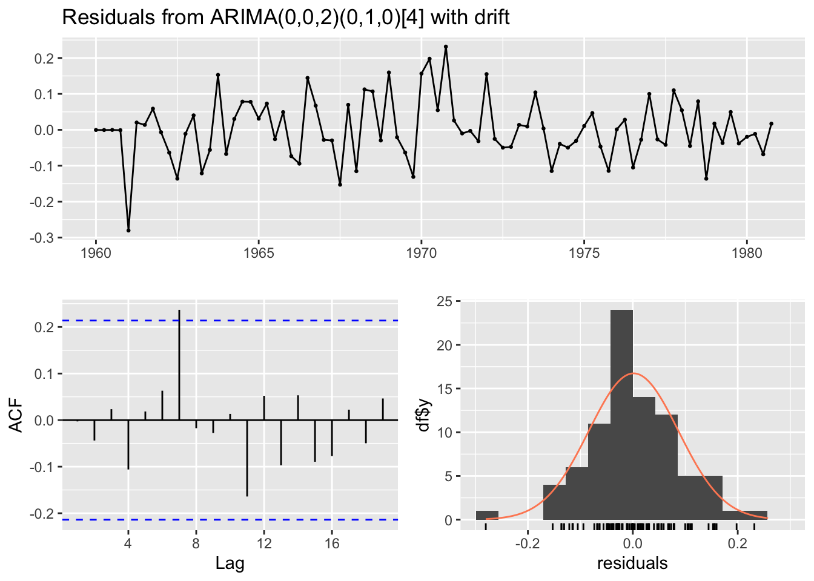
Ljung-Box test
data: Residuals from ARIMA(0,0,2)(0,1,0)[4] with drift
Q* = 6.9236, df = 6, p-value = 0.328
Model df: 2. Total lags used: 8
TipComment on Residual Analysis
A good ARIMA model should have residuals that look like white noise (random error with no pattern). I check three things:
Residuals plot: The residuals should fluctuate around zero with no trend or seasonal pattern visible. ✅ (if model is good)
ACF of residuals: Almost all lags should be inside the blue confidence bands. If many lags are significant, the model is missing some structure.
Ljung-Box test:
- H0: Residuals are white noise (no autocorrelation)
- If p-value > 0.05 → We cannot reject H0 → Residuals are okay ✅
- If p-value < 0.05 → Residuals still have autocorrelation → Model needs improvement
Note: Since we applied log() transformation to the data before running auto.arima, the residuals are on the log scale. The model was built on the transformed data, so the residual analysis should be done on the same scale.
4.5 Part 10 — Forecast with auto.arima Model
# Forecast the next several years (e.g., 8 quarters = 2 years)
jj_arima_fc <- forecast(jj_auto, h = 8)
# Remember: since we modelled log(JohnsonJohnson), we need to exponentiate back
# forecast package handles this with the lambda argument, but here we do it manually
# Actually auto.arima on log returns log-scale forecast:
# Plot on log scale (what the model sees)
autoplot(jj_arima_fc) +
ggtitle("JohnsonJohnson Forecast (log scale) — 8 Quarters Ahead") +
xlab("Year") + ylab("log(Earnings per Share)") +
theme_minimal()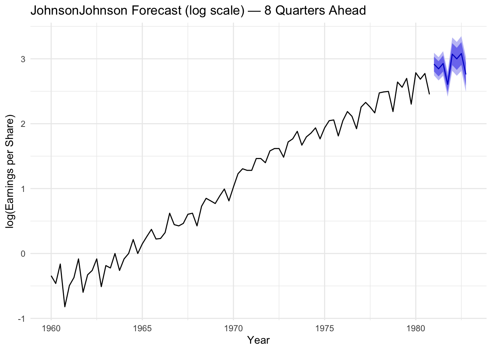
# Convert back to original scale using exp()
fc_original <- jj_arima_fc
fc_original$mean <- exp(jj_arima_fc$mean)
fc_original$lower <- exp(jj_arima_fc$lower)
fc_original$upper <- exp(jj_arima_fc$upper)
fc_original$x <- JohnsonJohnson
autoplot(fc_original) +
ggtitle("JohnsonJohnson Forecast (original scale) — 8 Quarters Ahead") +
xlab("Year") + ylab("Earnings per Share (USD)") +
theme_minimal()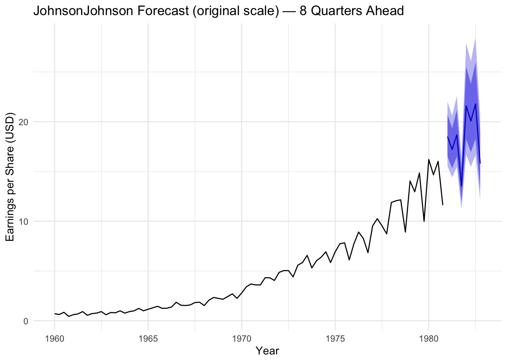
TipComment on Final Forecast
The ARIMA model predicts that J&J quarterly earnings will continue to grow in the next 2 years, following the established trend. The confidence intervals (the shaded area) become wider as we predict further into the future, which makes sense — we are less certain about what will happen in 2 years than in the next quarter.
The log transformation we applied before modelling is very important here: - We modelled log(JohnsonJohnson) → the model captures the exponential growth in the original scale - When we convert back using exp(), the forecast correctly shows an accelerating upward curve, not a straight line
This is the correct way to model data with multiplicative/exponential growth behaviour.
5 Summary and Key Takeaways
ImportantWhat I Learned from These Exercises
About Model Choice: - If the series has only noise → use SES - If the series has trend but no seasonality → use Holt’s method - If the series has trend AND seasonality → use Holt-Winters - Use additive when seasonal variation is constant; use multiplicative when seasonal variation grows with the trend
About Stationarity: - An ARIMA model needs a stationary series - Use log transformation to stabilize growing variance - Use differencing (diff) to remove trend - Use seasonal differencing (diff with lag=p) to remove seasonality - Always verify with ADF test and visual inspection of the transformed series
About Model Identification (ACF/PACF): - ACF cuts off + PACF decays slowly → MA(q) process - PACF cuts off + ACF decays slowly → AR(p) process - Both cut off → ARMA(p,q) process - Check seasonal lags (multiples of the period, e.g., 4, 8, 12 for quarterly data)
About Model Validation: - Always check the residuals — they should look like white noise - Use Ljung-Box test to formally test residuals - Compare models using AIC/BIC (lower is better) - Compare forecast accuracy using RMSE, MAE, MAPE (lower is better)
6 Appendix — R Code Reference
This is a quick reference for the most important R commands used in this analysis.
# ---- Load libraries ----
library(forecast)
library(astsa)
library(tseries)
# ---- Simulate ARIMA ----
arima.sim(model = list(order = c(p, d, q), ar = c(...), ma = c(...)), n = 200)
# ---- Plot time series ----
autoplot(data)
plot(data)
# ---- Decompose ----
decompose(data, type = "additive") # or "multiplicative"
mstl(data) # multiple seasonal decomposition
# ---- Classical methods ----
ses(data, h = forecast_horizon) # Simple Exponential Smoothing
holt(data, damped = FALSE, h = forecast_horizon) # Holt's method
hw(data, seasonal = "multiplicative", h = forecast_horizon) # Holt-Winters
# ---- Accuracy (GOF measures) ----
accuracy(model_object)
# ---- Stationarity test ----
adf.test(data) # H0: non-stationary; p < 0.05 means stationary
# ---- Transformations ----
log(data) # log transformation (stabilize variance)
diff(data, differences = 1) # regular differencing (remove trend)
diff(data, lag = 4) # seasonal differencing (remove seasonality)
# ---- Correlograms ----
acf2(data, max.lag = 30) # ACF and PACF together (astsa package)
acf(data) # only ACF
pacf(data) # only PACF
# ---- ARIMA models ----
auto.arima(data, stepwise = FALSE, approximation = FALSE)
arima(data, order = c(p, d, q), seasonal = list(order = c(P, D, Q), period = s))
# ---- Residual analysis ----
checkresiduals(model_object)
# ---- Forecast ----
forecast(model_object, h = forecast_horizon)
autoplot(forecast_object)Document created for STAT9005 — Time Series & PCA | MSc Data Science and Analytics